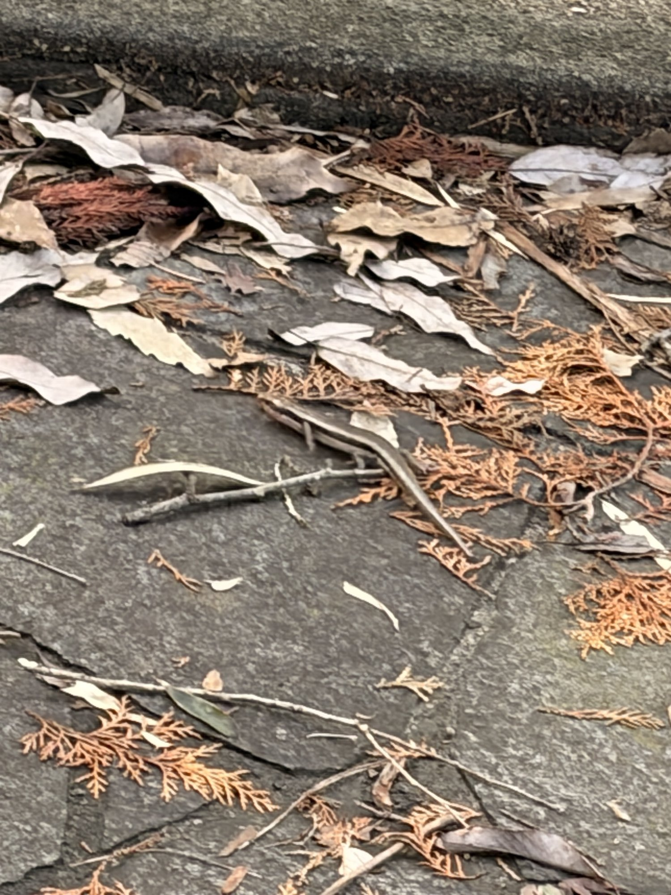
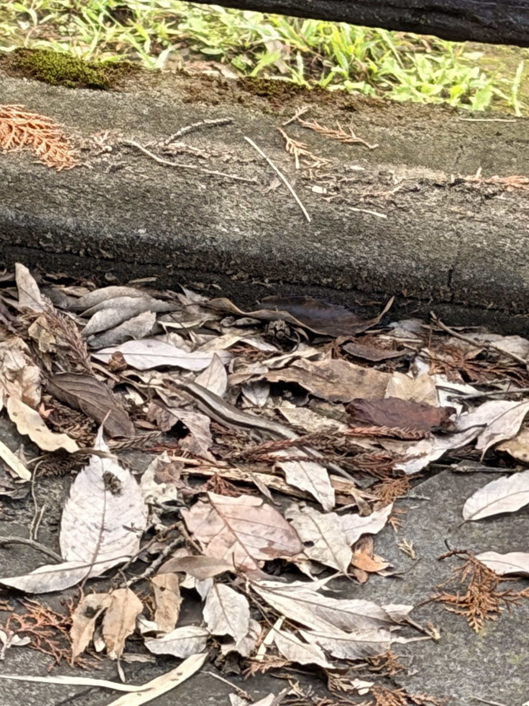

太平山6分45秒・340W。最速を13秒更新、前ももが一瞬だけ噛み合った
昨日はツール・ド・大那で74km。ただし内容は完全にポタリングで、エイドでひたすら食べながら友人とのんびり走った一日だった。
そして翌日。天気も良かったので、今日は太平山へ。前日に70km以上走っているので、脚が重ければ無理せず流すつもりだった。ところが走り出してみると、かなり調子がいい。むしろ最近の中でもかなり良い日だった。

40.66km・NP259W・TSS127.8
- 全体40.66km / 1時間26分41秒 / 獲得479m
- 負荷平均202W / NP259W / IF0.943 / TSS127.8
- 心拍・回転平均128bpm / 最大167bpm / 平均84rpm
前日の大那がTSS92.0。そこからの今日TSS127.8。数字だけ見ると、結構しっかり踏んでいる。
太平山は6分45秒・340W。最速を13秒更新
- 今日の太平山6分45秒 / 平均340W / NP342W / 心拍平均152bpm・最大167bpm / 94rpm
これまでの太平山を並べると、こうなる。
- 6月23日7分17秒 / 317W
- 7月9日7分15秒 / 316W
- 7月30日7分12秒 / 322W
- 8月17日6分58秒 / 330W（これまでの最速）
- 8月31日7分04秒 / 317W
- 9月3日7分00秒 / 324W
- 今日6分45秒 / 340W
これまでの最速だった8月17日の6分58秒・330Wから、13秒短縮して10W上がった。直近の9月3日と比べれば15秒・16W。7月9日の7分15秒・316Wと比べると30秒・24Wである。W/kgはいつも通り75kg基準で4.5W/kg。前日に74km走っていることを考えると、かなり良い数字だ。
太平山は普通に苦しかった。それ以外は楽だった
先に書いておくと、太平山の6分45秒は普通に呼吸が苦しかった。340Wで7分弱なのだから、当たり前である。
不思議だったのはそれ以外の区間。太平山以外では、呼吸が苦しくなかった。もちろん楽に走っていたわけではない。ただ、呼吸が限界に近づくような感じがなく、身体全体としてもかなりスムーズに走れていた。ライド全体ではNP259W・IF0.943と、完全にONの日なのに、である。
最近のローラーでは、SSTや5分走で呼吸がかなりキツくなる日が続いていた。9月8日は315Wの4本目が3分で終わり、えづくところまで行っている。実走だからという違いもあると思うが、それだけではない気がする。
前ももを一瞬だけ連動させる感覚
今日、一つかなり気になった感覚があった。これまでペダリングでは、臀部やハムストリングなど大きな筋肉を使って踏むことを意識していた。ただ今日は、ペダリングの中で一瞬だけ前ももを連動させるようにすると、「頑張っていないのに、妙によく進む」という感覚があった。
前ももだけで踏み込むわけではない。力んで押し下げる感じでもない。今まで使っていた身体の動きに、ほんの一瞬だけ前ももが自然に加わる感じ。それだけで自転車が前に進む。
筋力が突然増えたわけではないので、身体の使い方が少しだけ噛み合ったのかもしれない。もちろん今日一日だけなので、これが正解なのかはまだ分からない。ただ、今日の340Wと、太平山以外での呼吸の余裕を考えると、次の外ライドでも確認してみたいポイントである。
前日に74km走ったのに、むしろ調子が良い
昨日の大那は74.13km、TSS92.0。距離だけ見ればそれなりに長いライドだった。ただし平均78W、NP143W、IF0.520。ほとんどが低強度だったので、疲労は距離の印象ほど大きくなかったようだ。
そして今日、太平山で340W。ライド全体でもNP259W、IF0.943。完全にONの日になった。
最近、自分でも「身体の耐久値が上がってきた」と感じることがある。以前なら前日の距離を見て、今日は軽めにしようと考えていたかもしれない。でも今は、脚が動くなら普通に踏める。もちろん毎回うまくいくとは限らないが、少なくとも今日はその感覚がかなり強く出た日だった。
なお、途中に一度信号待ちがあったので、その区間は評価から外している。信号を挟んだ後もパワーはしっかり出ていて、後半まで大きく崩れなかった。
太平山でニホントカゲ
そして今日は、太平山でニホントカゲを発見。落ち葉の中をちょろちょろ動いていた。かわいかった。


最近の記事はワットだのSSTだの5分走だの、数字の話ばかりなので、こういうのを見ると少し和む。
今日やってみて思ったこと
今日一番大きかったのは、タイムでも340Wでもなく、「身体の使い方が少しだけ分かった気がする」という感覚だった。
筋力が急に増えたわけではない。FTPが突然上がったわけでもない。ただ、今までバラバラだった身体の使い方が、少しだけ繋がった感じ。
もし今日の前ももを一瞬連動させる感覚が再現できるなら、かなり面白い。次の外ライドでも確認してみる。もちろん、意識しすぎて前ももだけで踏むようになったら本末転倒。あくまで今日の「頑張っていないのによく進む」感覚を探す。そのくらいで続けてみる。
SST20分×3は完遂できるようになり、315W×5分×4本もクリア。次は315W×5分×5本。その前に、外でこんな感覚が出てきた。少しずつだが、ちゃんと前に進んでいる気がする。
次に見るポイント
- 再現性太平山6分45秒・340Wを再現できるか。今日がたまたまか
- 呼吸の余裕太平山以外の区間で感じた呼吸の余裕が、次も出るか
- 前もも“踏み込む”のではなく、一瞬だけ自然に連動させられるか
- ローラーでも315W×5分でも同じ身体の使い方ができるか
- 耐久値の条件高強度の翌日に、太平で320W台。9月3日の1回目に続く2回目がまだ出ていない